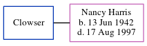

Esequiel Hernandez Ramirez 1924 - 1996
[ Home ] | [ Calendar ] | [ Surnames Index ] | [ Errors ] | [ Family History ]Esequiel Ramirez, the husband of Mildred Betty Harris (the fifth cousin once-removed on the mother's side of Nigel Horne), was born in Mexico on 15 Mar 19241,2 and andhad 3 children, Joe Louis, Steven Mike and Robert Allen.
He died on 28 May 1996 in Corcoran, Kings, California, USA1,2.
Children
- Joe Louis was born on 16 Nov 1951
- Steven Mike was born on 3 Jan 1957
- Robert Allen was born on 20 Nov 1958
Citations
- California, Death Record Index, 1940-1997 - Findmypast
- Social Security Death Index - Findmypast
Media
Social Security Death Index - USBMD/SSDI/549408056
California, Death Record Index, 1940-1997 - US/MCV/786204/10210905459246526818
Family Tree
Map
Generated by ged2site. Last updated on Jul 3, 2024